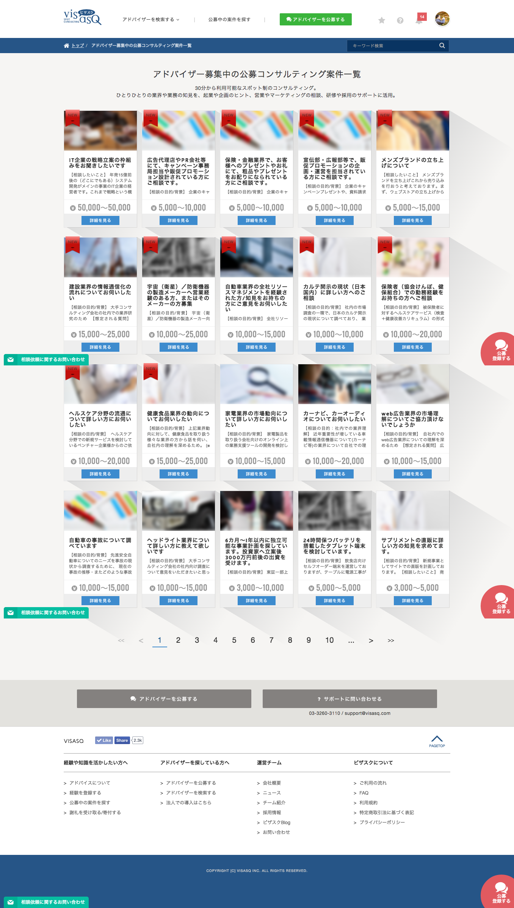
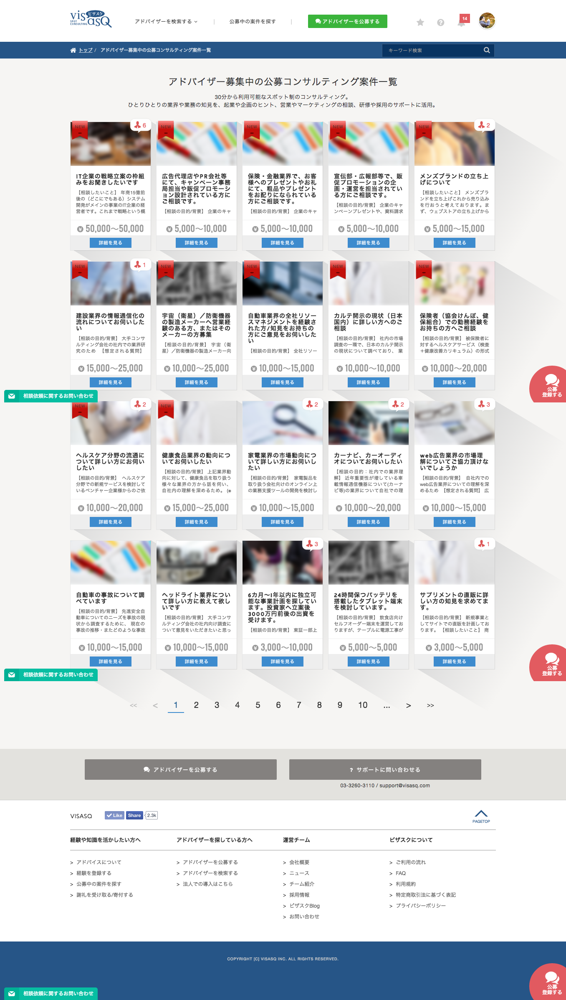
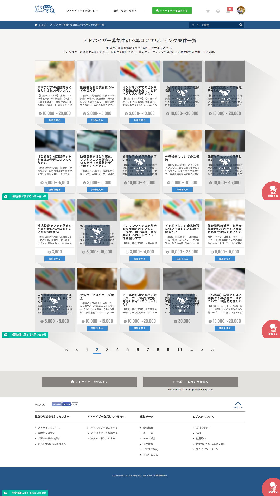
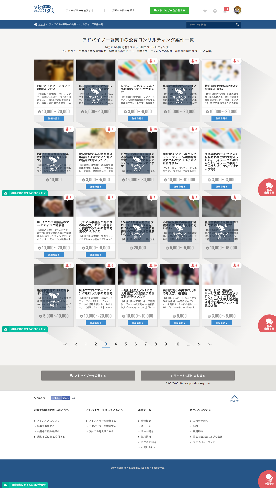
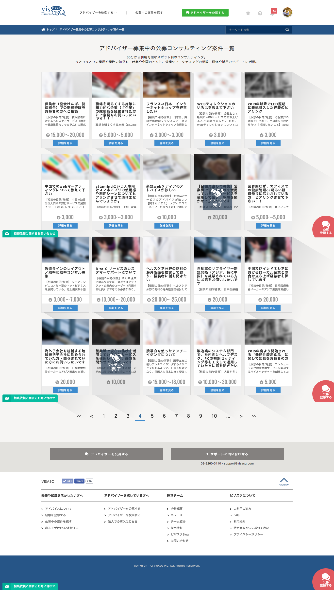

ビザスクの表示変更に伴い、印象のヒアリングを行っています。
下の画像はアドバイザーを公募している案件の一覧画面のキャプチャです。
非常に大きな画面です。下にスクロールするとパターンA、右にスクロールするとパターンBがあります。
パターンAが現在のサイトの状態、パターンBには各公募の右上に応募数を追加しました。
パターンA, ページ1 |
パターンB, ページ1 |
パターンA, ページ2 |
パターンB, ページ2 |
パターンA, ページ3 |
パターンB, ページ3 |
パターンA, ページ4 |
パターンB, ページ4 |